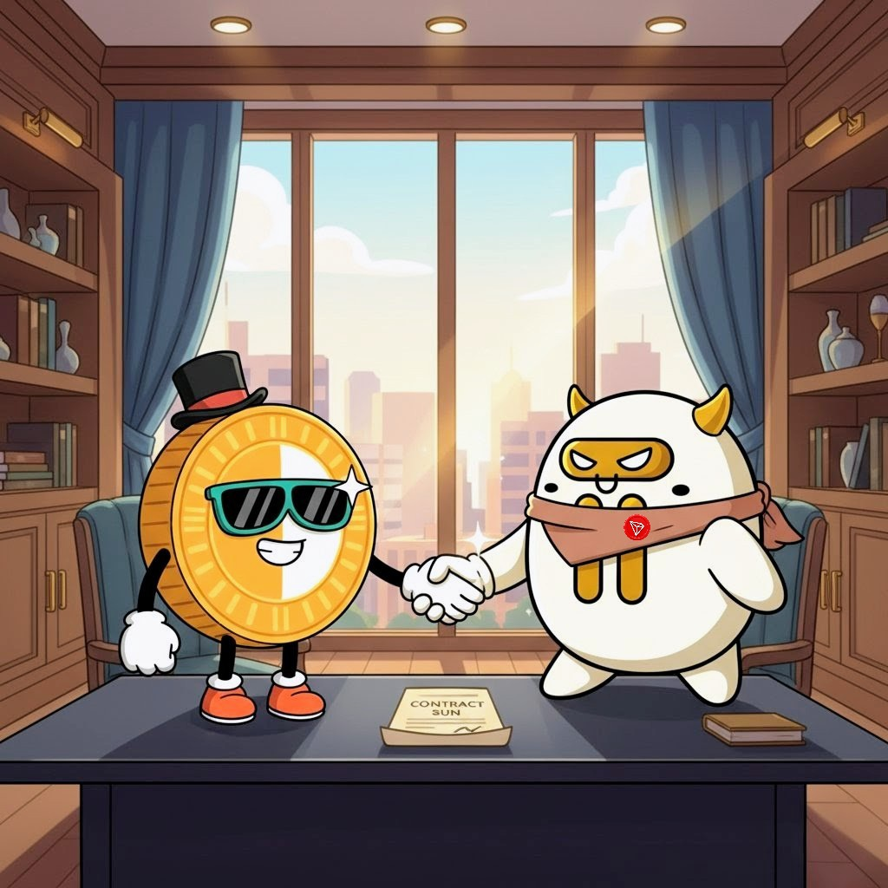

Phase 1 — The Birth of the Sun Bull
阶段 1 — 太阳公牛的诞生
Create $SUNBULL on SunPump (TRON), verify contract on-chain, launch website & social hubs, publish manifesto & tokenomics, and start airdrops & meme campaigns.
Forged from TRON’s legendary Bull and the explosive memetic energy of SunPump — SunBull ($SUNBULL) is the cultural emblem for the SUN family: SunPump · SunSwap · SunPerp. Built by the community, for the community — our audacious goal: make $SUNBULL the first TRON memecoin to reach $1B market cap.

Contract Address:
TAt4ufXFaHZAEV44ev7onThjTnF61SEaEM
In the heart of the TRON blockchain, where blocks pulse like a living sun, a new legend rose. The Bull — TRON’s ancestral mascot of strength, resilience and prosperity — reappeared, reborn in golden flames.
Those flames came from SunPump, the community furnace that reignited meme culture across the SUN ecosystem. Amid creators, memes and on-chain rituals, the Bull fused with solar power: a cinematic metamorphosis that created SunBull ($SUNBULL).
SunBull is designed to be the mascot of the SunPump community, the emblem of TRON’s meme culture and a new pillar of the SUN family — SunPump, SunSwap, SunPerp. Built by the community, for the community: our success depends on creators, memers and builders across TRON.
The TRON ecosystem was ignited by the vision of Justin Sun. SunBull pays homage to that spark while remaining independent — a cultural tribute that channels on-chain momentum, transparency, and community celebration.
During TRON’s meme renaissance, creators lit bonfires of creativity across channels and dApps. The Bull — a long-time symbol of bullish momentum — answered the call. It merged with SunPump’s feverish hype: muscle, wit and viral energy braided into a single symbol. That symbol is SunBull.
SunBull is the coin the entire TRON chain was quietly waiting for — not a flash in the pan but an era-defining movement. We are the flame that won’t fade, the memecoin built to stay. 2026 is approaching and we’re only getting started: bigger drops, louder memes, and burns that bind our legacy on-chain. We are not a trend — we are the pulse of TRON. Join the #SUNBULLARMY and be part of the era.
The community crowned the Bull with a solar crest and a mission: unify creators, celebrate the SUN family, and push memetic culture to the highest peaks. SunBull is a living culture: memes, drops, burns and community governance keep powering the story. Every burn is public and celebrated — each one a ceremonial step toward the crown.
“We do not go to the moon. We go to the SUN.”
SunBull blends four pillars: Strength (the Bull), Light (the Sun), Humor (meme culture) and Community. The goal is cinematic: to make SunBull the living mascot of TRON’s memetic movement and the first TRON memecoin to hit a $1B market cap.
| Category | Allocation | Notes |
|---|---|---|
| Community & Liquidity | 990,000,000 $SUNBULL (99%) | Distributed via SunPump and public listings — community liquidity & airdrops. |
| Team / Burn Reserve | 10,000,000 $SUNBULL (1%) | Reserved strictly for ceremonial burns (on-chain) as milestones are reached (see schedule below). |
| Market Cap (USD) | Tokens Burned | Purpose |
|---|---|---|
| $10,000,000 | 2,000,000 | First Solar Flame — Awakening. |
| $20,000,000 | 1,000,000 | Community growth. |
| $50,000,000 | 1,000,000 | Expansion. |
| $100,000,000 | 1,000,000 | Enduring flame. |
| $250,000,000 | 1,000,000 | Family unites. |
| $500,000,000 | 1,000,000 | Network illumination. |
| $750,000,000 | 1,000,000 | Empire consolidates. |
| $1,000,000,000 | 2,000,000 | Coronation — Meme Emperor is born. |
All burns will be executed transparently on the TRON chain with on-chain proof published to official channels. Remaining supply is destined for public listings, liquidity and community growth.
Create $SUNBULL on SunPump (TRON), verify contract on-chain, launch website & social hubs, publish manifesto & tokenomics, and start airdrops & meme campaigns.
Grow #SUNBULLARMY, schedule milestone burns tied to marketcap, push creator collaborations and community campaigns.
Release limited NFTs to celebrate milestones, increase international awareness, and create organic integrations with TRON dApps and creators.
Execute team burns at marketcap milestones — fully on-chain and transparent; celebrate each step with cultural drops and events.
Reach $1B market cap — final ceremonial burn, support creators, and solidify SunBull as TRON’s mascot for memetics.
Official integrations and listings will be announced on X.
TAt4ufXFaHZAEV44ev7onThjTnF61SEaEMWe represent the memetic soul of TRON. Follow official X for burns, drops and community calls.